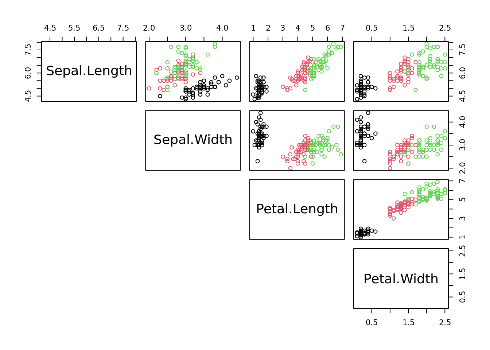
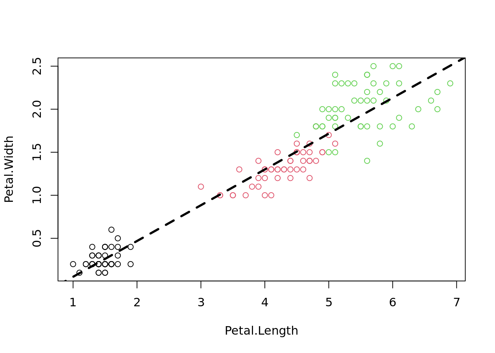
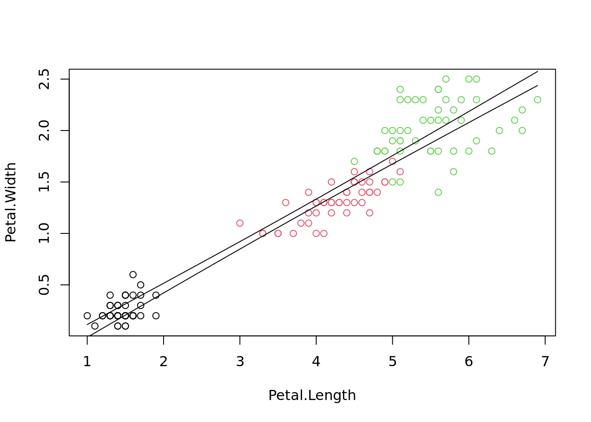
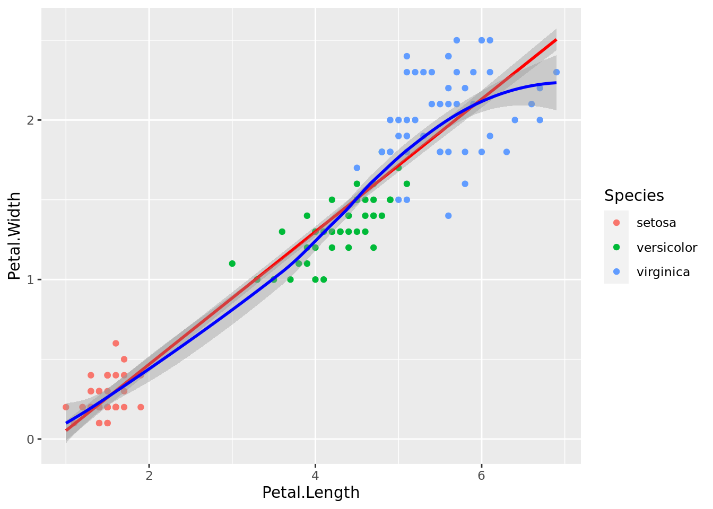
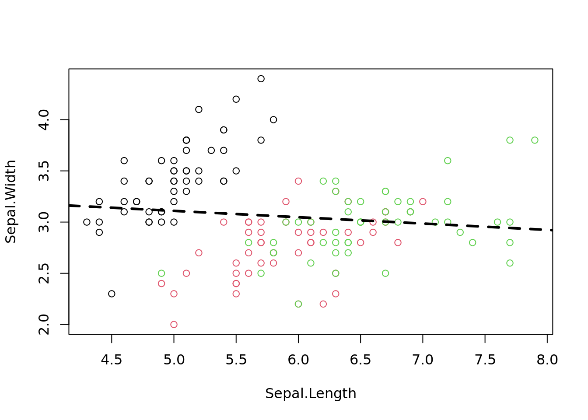
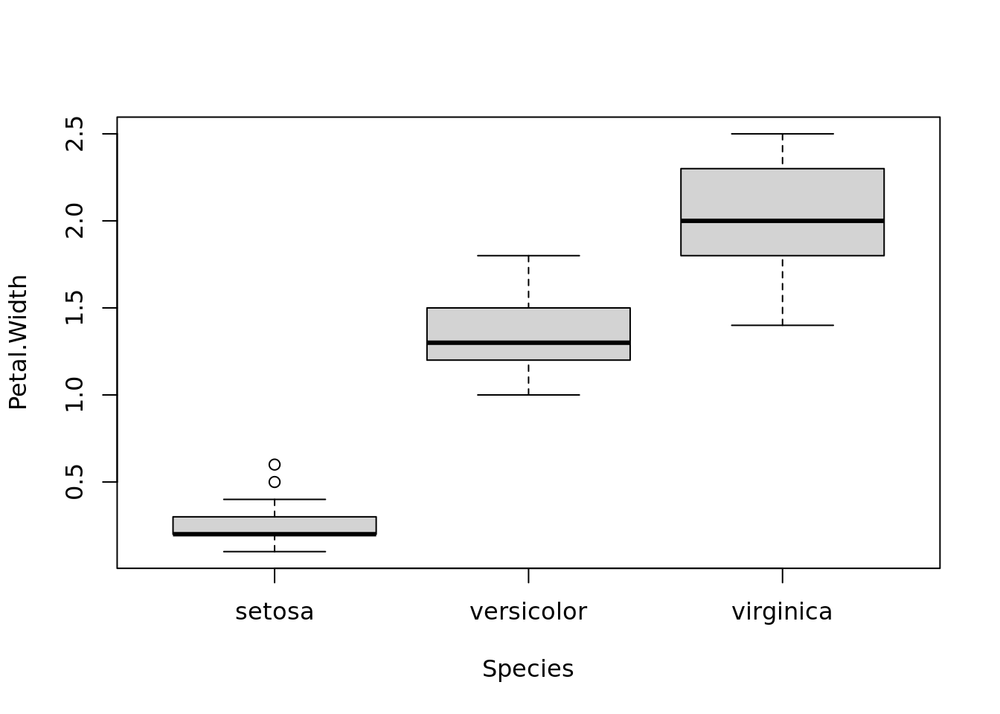
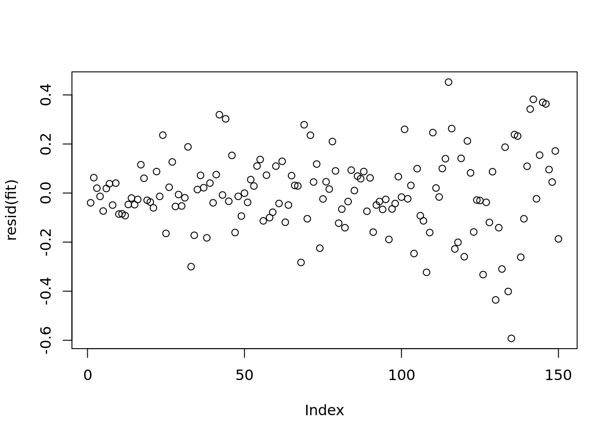
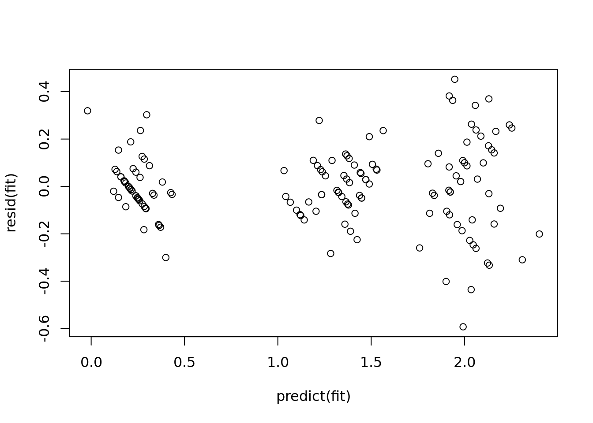
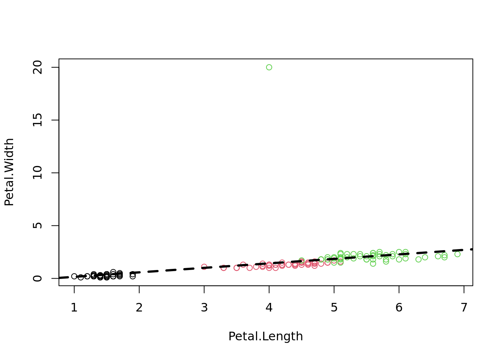
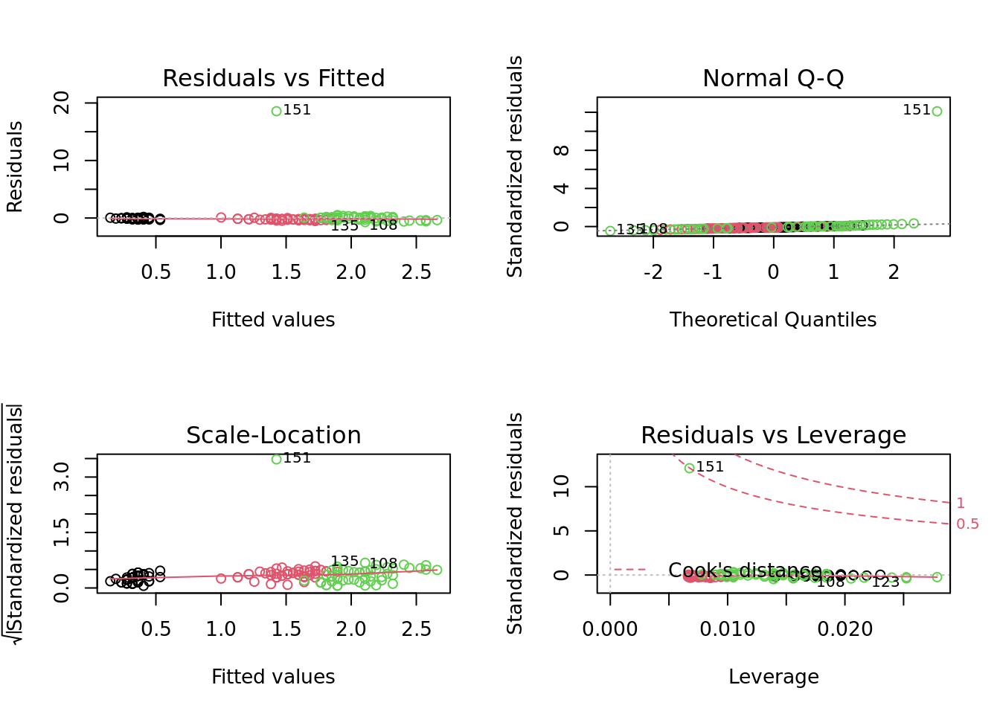

04: Data Modeling
Thomas Manke
Wed Mar 8 15:09:54 2023
- Recap: All-Against-All Correlations
- From Correlations to Models
- Reporting the fit (model)
- Plotting predictions with confidence intervals
- Example of a poor fit (replace “Petal” with “Sepal)
- Run predictions:
- Factorial variables as predictors
- More complicated models
- Anova
- Model checking
- Diagnostic Plots
- Review:
Recap: All-Against-All Correlations
Task: remove the Species variable from “iris” and store the result in a new data.frame “niris”
niris=iris[,-5] # generate new data frame without species variable
str(niris)## 'data.frame': 150 obs. of 4 variables:
## $ Sepal.Length: num 5.1 4.9 4.7 4.6 5 5.4 4.6 5 4.4 4.9 ...
## $ Sepal.Width : num 3.5 3 3.2 3.1 3.6 3.9 3.4 3.4 2.9 3.1 ...
## $ Petal.Length: num 1.4 1.4 1.3 1.5 1.4 1.7 1.4 1.5 1.4 1.5 ...
## $ Petal.Width : num 0.2 0.2 0.2 0.2 0.2 0.4 0.3 0.2 0.2 0.1 ...Task: Generate all-against-all correlation plot
# assign species-colors to each observation
cols = iris$Species # understand how color is defined
pairs(niris, col=cols, lower.panel=NULL) # "cols" was defined in task above
From Correlations to Models
Goal: Model some dependent variables y as function of other explanatory variables x (features)
\(y = f(\theta, x) = \theta_1 x + \theta_0\)
For \(N\) data points, choose parameters \(\theta\) by ordinary least squares:
\(RSS=\sum_{i=1}^{N} (y_i - y(\theta, x_i))^2 \to min\)
plot(Petal.Width ~ Petal.Length, data=iris, col=Species) # use model ("formula") notation
fit=lm(Petal.Width ~ Petal.Length, data=iris) # fit a linear model
abline(fit, lwd=3, lty=2) # add regression line
Task: What kind of class / data type is the object “fit”? Extract the coefficients of the fitted line and determine the residual degrees of freedom.
## (Intercept) Petal.Length
## -0.3630755 0.4157554## [1] 148Reporting the fit (model)
coefficients(fit)## (Intercept) Petal.Length
## -0.3630755 0.4157554confint(fit) # Try to change the confidence level: ?confint## 2.5 % 97.5 %
## (Intercept) -0.4416501 -0.2845010
## Petal.Length 0.3968193 0.4346915summary(fit)##
## Call:
## lm(formula = Petal.Width ~ Petal.Length, data = iris)
##
## Residuals:
## Min 1Q Median 3Q Max
## -0.56515 -0.12358 -0.01898 0.13288 0.64272
##
## Coefficients:
## Estimate Std. Error t value Pr(>|t|)
## (Intercept) -0.363076 0.039762 -9.131 4.7e-16 ***
## Petal.Length 0.415755 0.009582 43.387 < 2e-16 ***
## ---
## Signif. codes: 0 '***' 0.001 '**' 0.01 '*' 0.05 '.' 0.1 ' ' 1
##
## Residual standard error: 0.2065 on 148 degrees of freedom
## Multiple R-squared: 0.9271, Adjusted R-squared: 0.9266
## F-statistic: 1882 on 1 and 148 DF, p-value: < 2.2e-16This is a good fit - as suggested by a small residual standard error, a large coefficient of variation \(R^2 \in (0,1)\), a small p-value, (and by visualization).
\(R^2 = 1 - \frac{RSS}{TSS} = 1 - \frac{\sum_i(y_i - y(\theta,x_i))^2}{\sum_i(y_i-\bar{y})^2}\)
Plotting predictions with confidence intervals
x=iris$Petal.Length # explanatory variable from fit (here:Petal.Length)
xn=seq(min(x), max(x), length.out = 100) # define range of new explanatory variables
ndf=data.frame(Petal.Length=xn) # put them into new data frame
p=predict(fit, ndf, interval = 'confidence' , level = 0.95)
plot(Petal.Width ~ Petal.Length, data=iris, col=Species)
lines(xn, p[,"lwr"] )
lines(xn, p[,"upr"] )
#some fancy filling
#polygon(c(rev(xn), xn), c(rev(p[ ,"upr"]), p[ ,"lwr"]), col = rgb(1,0,0,0.5), border = NA)
## using ggplot2 - full introduction later
library(ggplot2)
g = ggplot(iris, aes(Petal.Length, Petal.Width, colour=Species))
g + geom_point() + geom_smooth(method="lm", se=TRUE, color="red") + geom_smooth(method="loess", colour="blue")## `geom_smooth()` using formula = 'y ~ x'
## `geom_smooth()` using formula = 'y ~ x'
Example of a poor fit (replace “Petal” with “Sepal)
plot(Sepal.Width ~ Sepal.Length, data=iris, col=cols)
fit1=lm(Sepal.Width ~ Sepal.Length, data=iris)
abline(fit1, lwd=3, lty=2) 
confint(fit1) # estimated slope is indistinguishable from zero## 2.5 % 97.5 %
## (Intercept) 2.9178767 3.92001694
## Sepal.Length -0.1467928 0.02302323summary(fit1)##
## Call:
## lm(formula = Sepal.Width ~ Sepal.Length, data = iris)
##
## Residuals:
## Min 1Q Median 3Q Max
## -1.1095 -0.2454 -0.0167 0.2763 1.3338
##
## Coefficients:
## Estimate Std. Error t value Pr(>|t|)
## (Intercept) 3.41895 0.25356 13.48 <2e-16 ***
## Sepal.Length -0.06188 0.04297 -1.44 0.152
## ---
## Signif. codes: 0 '***' 0.001 '**' 0.01 '*' 0.05 '.' 0.1 ' ' 1
##
## Residual standard error: 0.4343 on 148 degrees of freedom
## Multiple R-squared: 0.01382, Adjusted R-squared: 0.007159
## F-statistic: 2.074 on 1 and 148 DF, p-value: 0.1519Interpretation: slope is not significantly distinct from 0.
Run predictions:
x=iris$Sepal.Length # explanatory variable from fit (here:Sepal.Length)
xn=seq(min(x), max(x), length.out = 100) # define range of new explanatory variables
ndf=data.frame(Sepal.Length=xn) # put them into data frame
p=predict(fit1, ndf, interval = 'confidence' , level = 0.95) # predict values
plot(Sepal.Width ~ Sepal.Length, data=iris, col=Species)
lines(xn, p[,"lwr"] )
lines(xn, p[,"upr"] )Factorial variables as predictors
In the iris example the “Species” variable is a factorial (categorical) variable with 3 levels. Other typical examples: different experimental conditions or treatments.
plot(Petal.Width ~ Species, data=iris)
fit=lm(Petal.Width ~ Species, data=iris)
summary(fit)##
## Call:
## lm(formula = Petal.Width ~ Species, data = iris)
##
## Residuals:
## Min 1Q Median 3Q Max
## -0.626 -0.126 -0.026 0.154 0.474
##
## Coefficients:
## Estimate Std. Error t value Pr(>|t|)
## (Intercept) 0.24600 0.02894 8.50 1.96e-14 ***
## Speciesversicolor 1.08000 0.04093 26.39 < 2e-16 ***
## Speciesvirginica 1.78000 0.04093 43.49 < 2e-16 ***
## ---
## Signif. codes: 0 '***' 0.001 '**' 0.01 '*' 0.05 '.' 0.1 ' ' 1
##
## Residual standard error: 0.2047 on 147 degrees of freedom
## Multiple R-squared: 0.9289, Adjusted R-squared: 0.9279
## F-statistic: 960 on 2 and 147 DF, p-value: < 2.2e-16Interpretation:
“setosa” (1st species=reference) has mean Petal.Width=0.246(29). This is significantly different from 0 (p-value small. useless) “versicolor” (2nd species) has mean Petal.Width = Petal.Width(setosa) + 1.08(4) which is significantly larger (t~26. tiny p-value). there is a stat. significant difference between groups/species. “virginica” (3rd species) has mean Petal.Width = Petal.Width(setosa) + 1.78(4)
More complicated models
Determine residual standard error for different fits with various complexity
fit=lm(Petal.Width ~ Petal.Length, data=iris)
paste(toString(fit$call), sigma(fit))## [1] "lm, Petal.Width ~ Petal.Length, iris 0.206484348913609"fit=lm(Petal.Width ~ Petal.Length + Sepal.Length, data=iris) # function of more than one variable
paste(toString(fit$call), sigma(fit))## [1] "lm, Petal.Width ~ Petal.Length + Sepal.Length, iris 0.204445704742963"fit=lm(Petal.Width ~ Species, data=iris) # function of categorical variables
paste(toString(fit$call), sigma(fit))## [1] "lm, Petal.Width ~ Species, iris 0.204650024805914"fit=lm(Petal.Width ~ . , data=iris) # function of all other variable (numerical and categorical)
paste(toString(fit$call), sigma(fit))## [1] "lm, Petal.Width ~ ., iris 0.166615943019283"… more complex models tend to have smaller residual standard error -> “model selection” (AIC)
Anova
summary(fit) contains information on the individual coefficients. They are difficult to interpret
fit = lm(Petal.Width ~ Petal.Length + Sepal.Width + Sepal.Length + Species , data=iris)
summary(fit)##
## Call:
## lm(formula = Petal.Width ~ Petal.Length + Sepal.Width + Sepal.Length +
## Species, data = iris)
##
## Residuals:
## Min 1Q Median 3Q Max
## -0.59239 -0.08288 -0.01349 0.08773 0.45239
##
## Coefficients:
## Estimate Std. Error t value Pr(>|t|)
## (Intercept) -0.47314 0.17659 -2.679 0.00824 **
## Petal.Length 0.24220 0.04884 4.959 1.97e-06 ***
## Sepal.Width 0.24220 0.04776 5.072 1.20e-06 ***
## Sepal.Length -0.09293 0.04458 -2.084 0.03889 *
## Speciesversicolor 0.64811 0.12314 5.263 5.04e-07 ***
## Speciesvirginica 1.04637 0.16548 6.323 3.03e-09 ***
## ---
## Signif. codes: 0 '***' 0.001 '**' 0.01 '*' 0.05 '.' 0.1 ' ' 1
##
## Residual standard error: 0.1666 on 144 degrees of freedom
## Multiple R-squared: 0.9538, Adjusted R-squared: 0.9522
## F-statistic: 594.9 on 5 and 144 DF, p-value: < 2.2e-16Question: Rather than looking at differences between different factor levels. Does the factor “Species” as a whole account for variation in the observed Petal.Width. Sum-of-squared analysis: Anova
anova(fit) ## Analysis of Variance Table
##
## Response: Petal.Width
## Df Sum Sq Mean Sq F value Pr(>F)
## Petal.Length 1 80.260 80.260 2891.1136 < 2.2e-16 ***
## Sepal.Width 1 0.228 0.228 8.2248 0.004754 **
## Sepal.Length 1 0.701 0.701 25.2683 1.459e-06 ***
## Species 2 1.383 0.691 24.9043 5.143e-10 ***
## Residuals 144 3.998 0.028
## ---
## Signif. codes: 0 '***' 0.001 '**' 0.01 '*' 0.05 '.' 0.1 ' ' 1# order of variable matters: the following is not the same
# anova( lm(Petal.Width ~ . , data=iris) )Interpretation: Species account for much variation in the data (F(2, 147)=960. p tiny)
Model checking
Searching for patterns:
plot(resid(fit)) # residuals independent?
plot(predict(fit), resid(fit)) # residuals (and variation) dependent on prediction?
qqnorm(resid(fit)) # residuals normally distributed?
Task: Repeat the linear regression Petal.Width ~ Petal.Length with an outlier in the data
irisout=rbind(iris,list(5.8,3, 4, 20, "virginica"))## 'data.frame': 151 obs. of 5 variables:
## $ Sepal.Length: num 5.1 4.9 4.7 4.6 5 5.4 4.6 5 4.4 4.9 ...
## $ Sepal.Width : num 3.5 3 3.2 3.1 3.6 3.9 3.4 3.4 2.9 3.1 ...
## $ Petal.Length: num 1.4 1.4 1.3 1.5 1.4 1.7 1.4 1.5 1.4 1.5 ...
## $ Petal.Width : num 0.2 0.2 0.2 0.2 0.2 0.4 0.3 0.2 0.2 0.1 ...
## $ Species : Factor w/ 3 levels "setosa","versicolor",..: 1 1 1 1 1 1 1 1 1 1 ...## Sepal.Length Sepal.Width Petal.Length Petal.Width
## Min. :4.300 Min. :2.000 Min. :1.00 Min. : 0.100
## 1st Qu.:5.100 1st Qu.:2.800 1st Qu.:1.60 1st Qu.: 0.300
## Median :5.800 Median :3.000 Median :4.30 Median : 1.300
## Mean :5.843 Mean :3.057 Mean :3.76 Mean : 1.324
## 3rd Qu.:6.400 3rd Qu.:3.300 3rd Qu.:5.10 3rd Qu.: 1.800
## Max. :7.900 Max. :4.400 Max. :6.90 Max. :20.000
## Species
## setosa :50
## versicolor:50
## virginica :51
##
##
## 
##
## Call:
## lm(formula = Petal.Width ~ Petal.Length, data = irisout)
##
## Residuals:
## Min 1Q Median 3Q Max
## -0.7068 -0.2507 -0.1283 0.0070 18.5739
##
## Coefficients:
## Estimate Std. Error t value Pr(>|t|)
## (Intercept) -0.27563 0.29658 -0.929 0.354
## Petal.Length 0.42544 0.07149 5.951 1.83e-08 ***
## ---
## Signif. codes: 0 '***' 0.001 '**' 0.01 '*' 0.05 '.' 0.1 ' ' 1
##
## Residual standard error: 1.541 on 149 degrees of freedom
## Multiple R-squared: 0.192, Adjusted R-squared: 0.1866
## F-statistic: 35.41 on 1 and 149 DF, p-value: 1.83e-08Diagnostic Plots
“fit” is a large object of the lm-class which contains also lots of diagnostic informmation. Notice how the behaviour of “plot” changes.
op=par(no.readonly=TRUE) # safe only resettable graphical parameters, avoids many warnings
par(mfrow=c(2,2)) # change graphical parameters: 2x2 images on device
plot(fit2,col=irisout$Species) # four plots rather than one
par(op) # reset graphical parametersmore examples here: http://www.statmethods.net/stats/regression.html
Linear models \(y_i=\theta_0 + \theta_1 x_i + \epsilon_i\) make certain assumptions (\(\epsilon_i \propto N(0,\sigma^2)\))
- residuals \(\epsilon_i\) are independent from each other (non-linear patterns?)
- residuals are normally distributed
- have equal variance \(\sigma^2\) (homoscedascity)
- are there outliers (large residuals) or observations with strong influence on fit
Review:
- dependencies between variable can often be modeled
- linear model lm(): fitting, summary and interpretation
- correlation coefficients can be misleading
- linear models may not be appropriate. >example(anscombe)
Bioinfo Core @ MPI-IE Freiburg (2023)